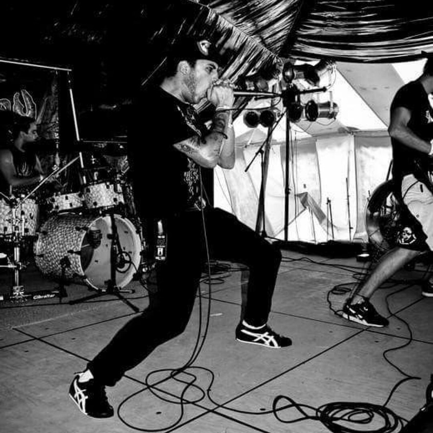

Product
- Brief
- Requirements
- Hypotheses
Stage hides review tools. Right arrow advances a build, then the slide. Left arrow reverses it. F toggles fullscreen. Escape or S returns to review. Tab operates the demo form; focus outside it to resume slide keys.
Governance, systems, and the new role
of DesignOps in product teams
The bottleneck moves: production → alignment → quality.

Xbox Design Ops
Different patterns. Conflicting terminology. Unowned decisions.
Patterns ready to activate.
What should we use and how should we use it?
The intelligence layer for the right choices.
What makes it good enough?
Evidence + checks + expert critique
Accept, revise,
or reject—with reasons.
Automated checks inform judgment. They do not prove a design is good.
Keep the decision and its reason.
Share them with the next team.
DesignOps defines the conditions
under which the work happens.
Shared rules. Reusable context. Human evaluation.
AI-ASSISTED WORK · SHARED ACROSS ROLES
GOVERN · CONTEXT · EVALUATE
Each role connects to common rules, context, and evaluation—not a central approval queue.
Domain experts still own product decisions.
Customer need → handoff → wait → handoff → wait → customer feedback
Workflow animations are illustrative, not measured durations.
Shared purpose → synchronized work → AI-assisted production
Customer need → PM + research + design + engineering → customer feedback
Hypothesis: production can shrink; experimentation can expand. Validate it.
Explore the 30-day pilot ↗Advanced context for a production sprint
MetricsSpeed · Quality · Outcomes
If AI becomes part of how we design products,
DesignOps.
AI doesn't eliminate the need for DesignOps.
It makes DesignOps infrastructure.
DESIGNOPS AS AI INFRASTRUCTURE
Data, privacy, risk, and policy.
Set non-negotiable constraints.
Approved technology and access.
Maintain secure capabilities.
Translate policy into workflows.
Facilitate context and evaluation.
PM, research, design, engineering.
Own quality and release decisions.
Good governance pre-approves safe paths—not every individual click.
Prototype → Build → Improve → Grow → Maintain
Exploration, production, simplification, experimentation, and reliability need different controls.Start with one pattern: its intent, code, valid uses, forbidden uses, and checks.
Re-run evaluation before switching.
Model-agnostic does not mean behavior-identical.
Canonical prompts encode domain knowledge—not one person's clever phrasing.
Co-author with PMs, researchers, designers, and engineers.
Version context, permissions, examples, and acceptance criteria together.
| Metric | Definition / unit | Collection method |
|---|---|---|
| Brief → validated concept | Median elapsed days; fixed validation criteria | Brief timestamp → review + user evidence |
| Design production rate | Accepted artifacts per team-week | Same artifact class, scope, and acceptance rubric |
| Production / review effort | Person-hours per accepted concept; report separately | Time log including critique + validation |
| Rework / revision rate | % reviewed artifacts requiring a major revision | Revision log; agree “major” before starting |
| System compliance | % applicable design-system checks passed | Token, component, and interaction-pattern audit |
| Accessibility / quality defects | Open defects per 10 reviewed screens + severity | Manual and automated checks, deduplicated |
| Design-to-code divergence | % audited UI instances violating approved intent | Paired design/code review of a defined sample |
| Experimentation / reuse | Completed experiments/week; % work citing approved context | Decision log; context provenance in artifacts |
Match scope + staffing. Record sample size + spread. Audit sampling bias. Track customer task success separately.
Small pilots are directional—not causal proof. Set adoption / revise / stop criteria before seeing results.
What does your organization
allow the model to know?
Layer 1 of 5: Models. Build from the foundation up.
Connects the system · enables adoption
Guardrails · exclusions · human checkpoints
Tokens · components · research · brand · accessibility
Terminology · workflows · repos · product experiences
Design assistants · coding agents · research tools
Replaceable capabilities, not institutional knowledge
A map of AI use, gaps, and risk.
One workflow with shared context.
A review plan: owner, criteria, baseline.
Comparable work, reviewed evidence.
THEN DECIDE Adopt / Revise / Stop